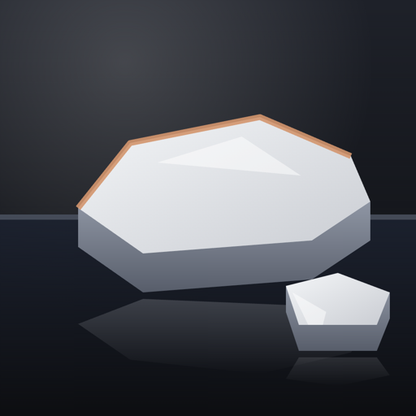

Not pixel art. The same two floes, redrawn with the rules the app now follows: straight edges, square joins and caps, no curves, no gradients, a square tile. Tile is the icon's own #1b2026, ice #eaf3fa, water the accent. Shown at 512, 128, 64, 32 and 16, and in a fake dock beside a normal icon.

today